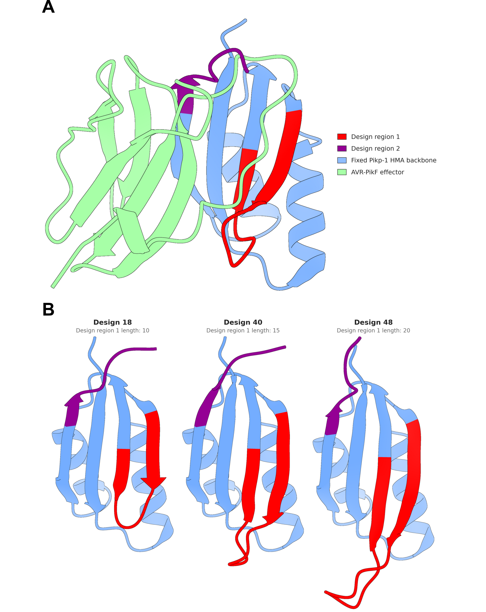

RFdiffusion inpainting rebuilt two regions of the Pikp-1 HMA and left the rest of the scaffold intact. Design region 1 was sampled at 10 to 20 residues against a wild-type length of 13, and design region 2 was fixed at 6 residues, giving the region spec 10-20|6-6. Design region 1 is internal, flanked by fixed scaffold at both ends. Design region 2 is the final 6 residues of the receptor, so it is anchored at one end only.
This asks how far the retained scaffold constrained the rebuilt backbones.
Regenerate with:
cd analyses/01-design-region-backbonesChimeraX--exit--nogui--script dssp_extract.pypython3 design_region_summary.pypython3 structural_correspondence_extract.py
Secondary structure is assigned by the DSSP implementation in ChimeraX, run on the 64 RFdiffusion backbones and on the wild-type reference through the same call. The RFdiffusion outputs carry N, CA, C and O, so strand assignment is computed from backbone hydrogen bonds rather than from geometry by hand.
An earlier pass used pydssp 0.9.1 instead, in a script that was never committed, and reported 57 designs with a two-residue strand at design region 2. pydssp implements only the backbone hydrogen-bond term and emits three states. It disagrees with ChimeraX on whether a third residue at the strand edge counts, which is 11 designs against 4. Everything below is the ChimeraX assignment.
Code
from pathlib import Pathimport collectionsimport pandas as pdHERE = Path.cwd()ifnot (HERE /"design_region_summary.csv").exists(): HERE = Path("analyses/01-design-region-backbones")summary = pd.read_csv(HERE /"design_region_summary.csv")summary.head(10)
All 64 designs rebuilt design region 1 as exactly two strand segments, the same topology as the wild type (SSSSSCCCCCSSS).
Median strand content rises from 7 residues in the shortest designs to 13 in the longest, so the sampled length is absorbed by extending the strands rather than by adding loop.
Design region 2 reproduces the wild-type C terminus
Each design region 1 residue is matched to a wild-type residue by structure after superimposing on the fixed N-terminal block. Residues with no wild-type counterpart within the cutoff are the extension.
Positions 1 to 5 match the wild type in every design, and insertions concentrate at positions 6 to 11, which is the turn of the hairpin.
Thesis figure

The input complex and three designs at design region 1 lengths of 10, 15 and 20.
Panels are rendered by render_design_regions.cxc and composed by build_design_region_figure.py.
ChimeraX cannot save images under --nogui on macOS, so the render step needs the GUI. The rendered panels are kept in renders/ so the figure can be rebuilt without re-rendering.